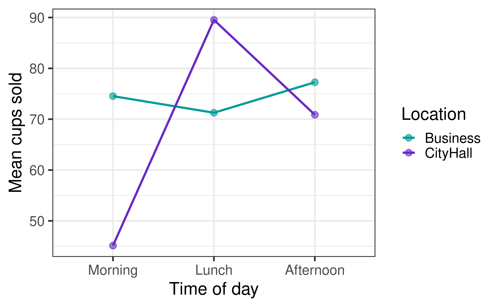
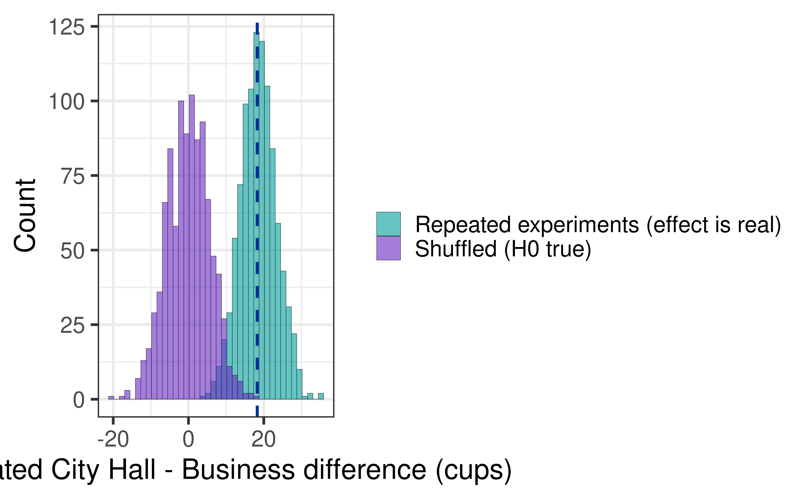
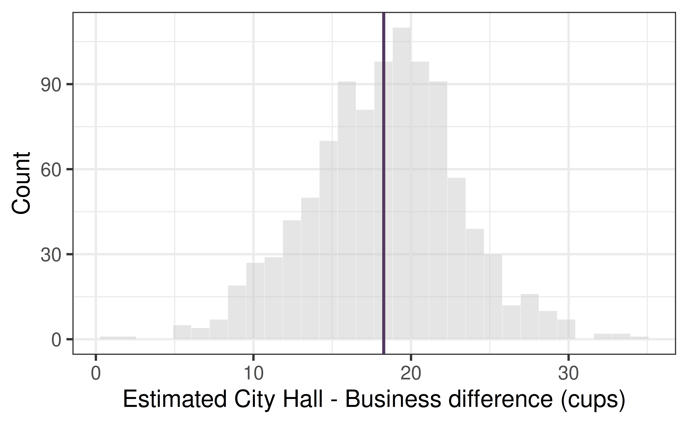
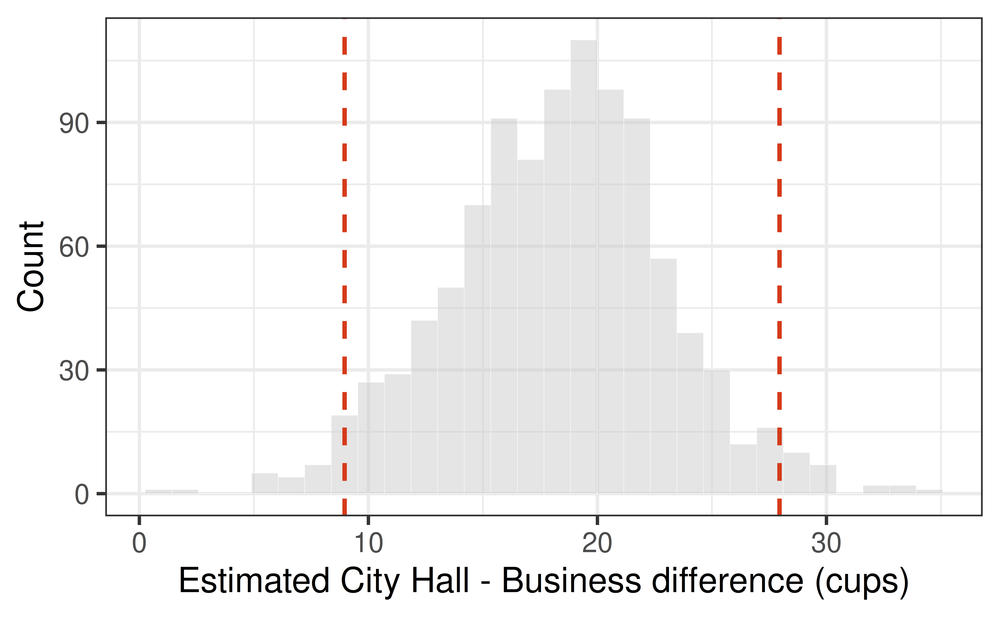
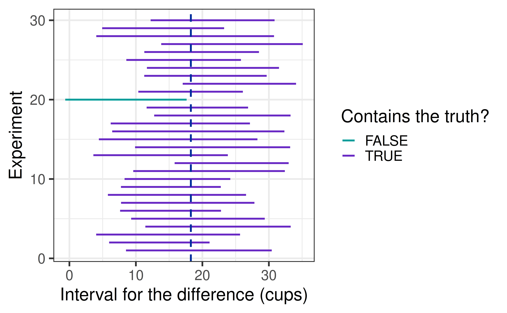

| term | estimate | std.error | statistic | p.value |
|---|---|---|---|---|
| (Intercept) | 71.27 | 3.4 | 20.98 | 0 |
| LocationCityHall | 18.27 | 4.8 | 3.80 | 0 |
Confidence Intervals
How sure are we about the estimate?
Prof. Eric Friedlander
Review: p-values and F-tests
Where we are
Last time we used the \(F\)-test to test whole batches of coefficients, and we found that the effect of Location on Sales depends on TimeOfDay.

A p-value tells us whether a coefficient could be 0, but not how big it is. At Lunch, City Hall sells about 18 more cups than the Business District. Jo’s gas costs $15 and each cup sells for $3. Should Jo drive?
The problem with one number
The estimate for LocationCityHall is 18.3 cups, from only 15 days at each location.
If Jo ran the experiment again, would they get exactly 18.3 again? Would the answer be 10? 30? 5?
A confidence interval gives a range of plausible values for the true difference, based on how much the estimate varies from sample to sample.
The sampling distribution when there is an effect
In Lecture 19, shuffling gave us the sampling distribution of \(\hat\beta_1\) if there were no effect: centered at 0.
If the true difference is not 0, the sampling distribution is centered at the true difference instead. The spread is still about \(SE(\hat\beta_1)\).
Let’s pretend our fitted Lunch model is the truth, and rerun the experiment 1000 times:

Where is each distribution centered? Which one tells us how much our estimate could vary from sample to sample when the effect is real? That is what a confidence interval needs.
The bootstrap
Resampling our data
We only have one sample. To see how much the estimate would vary, we pretend our sample is the population and draw new samples from it, with replacement, of the same size.
| term | estimate | std.error | statistic | p.value |
|---|---|---|---|---|
| (Intercept) | 66.55 | 2.15 | 30.93 | 0 |
| LocationCityHall | 19.35 | 3.73 | 5.19 | 0 |
Same data, different resample, different estimate.
Which new idea is this similar to? (Hint: Lectures 10 and 11 used shuffling.) What is different?
1000 resamples

The distribution of the bootstrap estimates is centered on our estimate (purple line), not on 0 as in a hypothesis test.
A bootstrap confidence interval
Take the middle 95% of the bootstrapped estimates: the 2.5th and 97.5th percentiles.

Based on this interval, what are plausible values for the true difference in mean sales at Lunch?
The formula-based interval
From a standard error to an interval
From Lecture 11, we know the standard error of a slope, and that \((\hat\beta_1 - \beta_1)/SE(\hat\beta_1)\) follows a \(t\) distribution. So:
\[ \hat\beta_1 \;\pm\; t^* \times SE(\hat\beta_1) \]
where \(t^*\) cuts off the middle 95% of a \(t\) distribution with \(n - 2\) degrees of freedom.
In R
| term | estimate | std.error | statistic | p.value | conf.low | conf.high |
|---|---|---|---|---|---|---|
| (Intercept) | 71.27 | 3.4 | 20.98 | 0 | 64.31 | 78.22 |
| LocationCityHall | 18.27 | 4.8 | 3.80 | 0 | 8.43 | 28.11 |
Compare with the bootstrap interval:
| method | lower | upper |
|---|---|---|
| Formula (t) | 8.4 | 28.1 |
| Bootstrap | 9.0 | 28.0 |
Why are they so close? When might they be different?
What does “95% confident” mean?
Interpreting an interval
Which of these is correct?
- There is a 95% chance that the true difference is between 8.4 and 28.1.
- 95% of the Lunch shifts had a difference in this range.
- If we repeated the experiment many times and made an interval each time, about 95% of the intervals would contain the true difference.
Only 3 is right. The true difference is a fixed number. The interval is what changes from sample to sample.
Simulating the “95%”
Let’s pretend our fitted model is the truth. We run the experiment 1000 times, make a 95% interval each time, and count how often the interval contains the true difference.
[1] 0.958
Intervals, tests, and effect size
Intervals and tests
- If 0 is outside the 95% interval, the p-value for \(H_0: \beta_1 = 0\) is below 0.05.
- If 0 is inside, the p-value is above 0.05.
But the interval tells us more: it shows the size of the effect, not just whether it is detectable.
For Jo’s problem, what matters more: whether the difference is zero, or whether it is bigger than the break-even?
Back to the break-even
From HW 07: Jo needs at least 5 extra cups at City Hall to cover $15 of gas (at $3 per cup).

The grey line is 0 and the dashed red line is the break-even. Where does the interval sit? What would you tell Jo?
Each cup actually costs $1 in ingredients, so Jo keeps $2 per cup and the break-even is 7.5 cups. Does that change your answer?
Four cases
Where the interval sits relative to 0 and to the break-even tells you what to do:
| Interval | Statistically significant? | Practically significant? | Advice |
|---|---|---|---|
| Entirely above the break-even | Yes | Yes | Drive |
| Above 0, but spans the break-even | Yes | Unclear | Gather more data |
| Spans 0 and the break-even | No | Unclear | Not enough data to tell |
| Entirely below the break-even | maybe | No | Do not drive |
What makes an interval narrow?
Width
The width of a \(t\) interval is \(2 \times t^* \times SE(\hat\beta_1)\). A narrow interval means a precise estimate.
| Days per location | Average interval width |
|---|---|
| 5 | 37.5 |
| 10 | 24.7 |
| 15 | 19.7 |
What happens to the width as we collect more data? What other things should make the interval narrower? (Hint: think back to power in Lectures 14 and 15.)
- More data: smaller \(SE\).
- Less noise (\(\hat\sigma_\epsilon\)): smaller \(SE\).
- A lower confidence level (90% instead of 95%): smaller \(t^*\), but a worse guarantee.
Intervals for regression coefficients
Intervals in MLR
The same recipe works for every coefficient in a multiple regression.
temp_fit <- lm(Sales ~ Temperature, data = coffee)
mlr_fit <- lm(Sales ~ Temperature + Location + TimeOfDay, data = coffee)
bind_rows(
tidy(temp_fit, conf.int = TRUE) |> mutate(model = "Temperature only"),
tidy(mlr_fit, conf.int = TRUE) |> mutate(model = "Temperature + Location + TimeOfDay")
) |>
filter(term == "Temperature") |>
select(model, estimate, conf.low, conf.high) |>
kable(digits = 2)| model | estimate | conf.low | conf.high |
|---|---|---|---|
| Temperature only | -1.24 | -1.97 | -0.50 |
| Temperature + Location + TimeOfDay | -0.62 | -1.16 | -0.08 |
The interval for the Temperature slope moved when we added Location and TimeOfDay. Why? Does Jo’s conclusion about temperature change?
Intervals and interactions
Back to last time’s interaction model for Business vs. City Hall:
| term | estimate | conf.low | conf.high |
|---|---|---|---|
| (Intercept) | 77.3 | 71.2 | 83.3 |
| LocationCityHall | -6.4 | -15.0 | 2.2 |
| TimeOfDayLunch | -6.0 | -14.6 | 2.6 |
| TimeOfDayMorning | -2.7 | -11.3 | 5.8 |
| LocationCityHall:TimeOfDayLunch | 24.7 | 12.6 | 36.8 |
| LocationCityHall:TimeOfDayMorning | -23.0 | -35.1 | -10.9 |
Is there convincing evidence that the City Hall effect is different at Lunch than in the Afternoon? How can you tell from the interval?
Activity: AE 21
Back to your pilot data. Paste in your code from AE 19 first, then:
- Part 1: get the formula-based 95% interval for each coefficient and interpret your primary variable’s interval.
- Part 2: build a bootstrap interval and compare it with the formula interval.
- Part 3: is your pilot precise enough? What does the width tell you about your full-study sample size?
Recap
- A confidence interval gives plausible values for a parameter, based on how much the estimate varies from sample to sample.
- Two ways to make one: bootstrap (resample the data) or formula (\(\hat\beta \pm t^* \cdot SE\)).
- “95% confident” is a statement about the procedure: about 95% of intervals made this way contain the truth.
- An interval shows both whether an effect is detectable (does it contain 0?) and how big it could be (where does it sit relative to the break-even?).
- Intervals get narrower with more data and less noise, so the width of your pilot interval helps you plan the sample size for your full study.